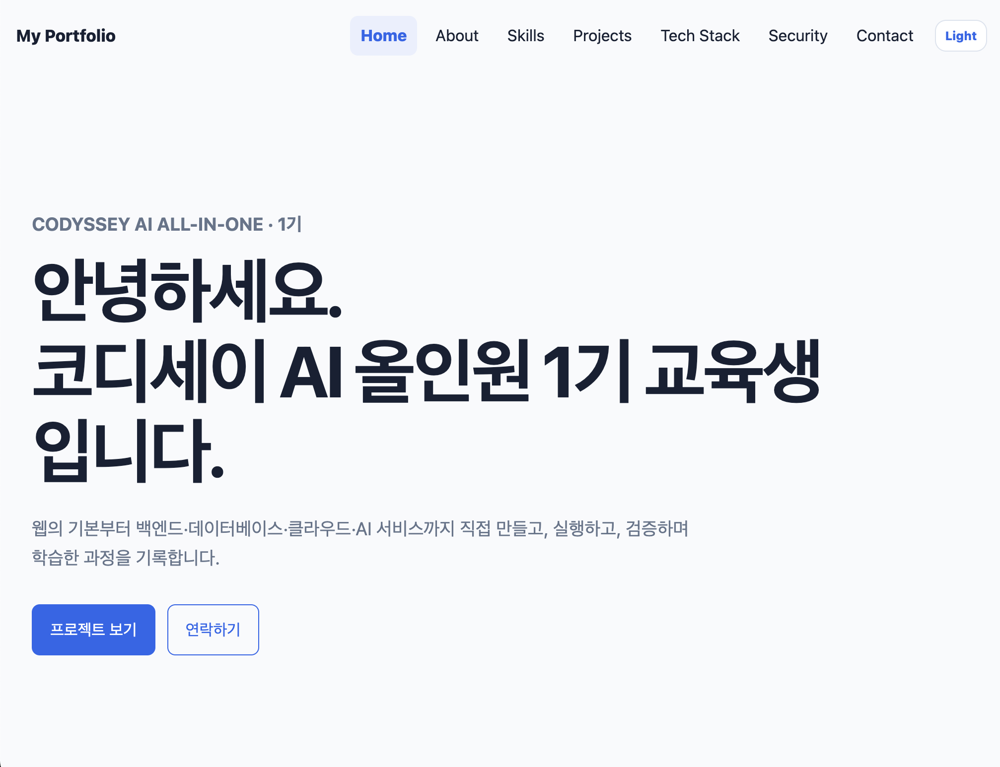

구조
HTML이 문서의 의미와 화면 영역을 정의합니다.
Semantic HTMLHTML이 문서의 의미와 화면 영역을 정의합니다.
Semantic HTMLCSS가 색상·레이아웃·반응형 화면을 담당합니다.
Mobile FirstJavaScript가 Event → State → Render를 연결합니다.
DOM + StateRuntime과 Evidence로 실제 동작을 증명합니다.
GitHub Pages
HTML/CSS/JavaScript 반응형 포트폴리오를 구현했습니다.
React 이전에 DOM·Event·State·Render 원리를 직접 이해하기 위해서입니다.
Semantic HTML, Mobile First, Flex/Grid, State, fetch/async-await를 사용했습니다.
GitHub Pages에서 모바일·Theme·Form·API를 실제 Runtime으로 확인했습니다.
GitHub API Rate Limit, localStorage의 기기 간 비동기화, Formspree 외부 의존성이 있습니다.
B1-1은 HTML로 구조를 만들고 CSS로 반응형 화면을 구성하며, JavaScript로 Event → State → Render → DOM 흐름을 직접 구현한 프로젝트입니다. Navigation은 1차원 정렬이라 Flexbox, Projects는 2차원 카드 배치라 Grid를 사용했고, GitHub API는 loading·success·empty·error 상태로 나누어 처리했습니다.